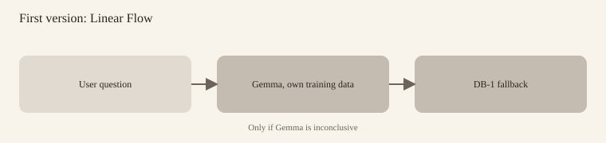
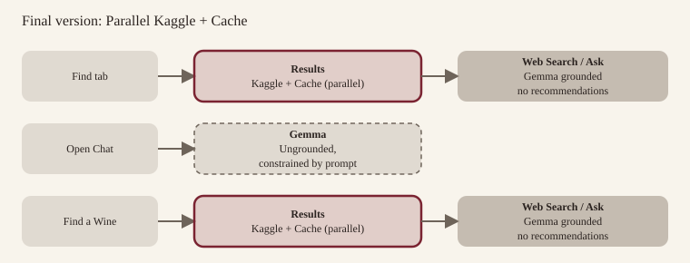
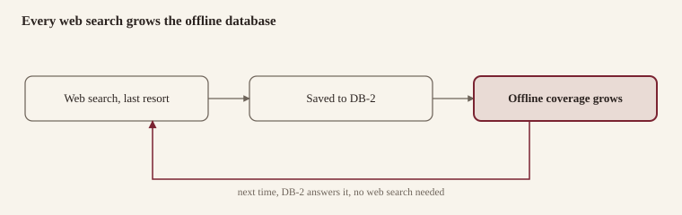
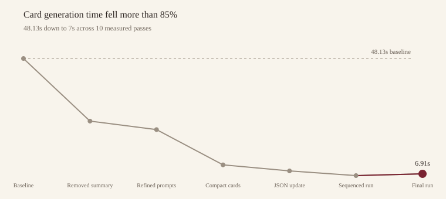
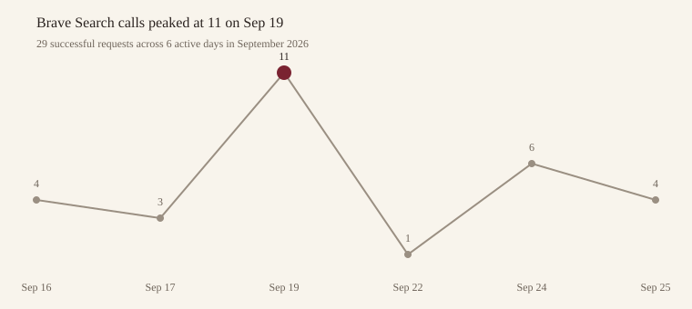
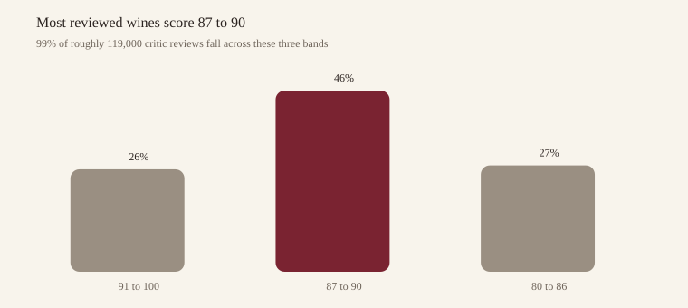
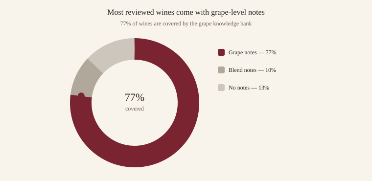

Designing for Resilience in On-Device AI
A Case Study on Uncork: A Self-Taught Journey from Consumer Friction to Functional Edge AI
1. Executive Summary
A few days ago, I found myself in a familiar predicament: I was standing in the basement of my local wine store trying to choose a bottle of wine. There was no reception, no knowledgeable staff nearby, and I lacked deep domain expertise to confidently distinguish one option from another. Now, I appreciate a fine wine, but I'm not a sommelier by any stretch of the imagination.
Technically, it was a trivial problem. I could have consulted an existing wine app or a web search by stepping outside briefly. But, in that moment of apparent disconnection, a more compelling question emerged: could I architect a tool that provided qualified guidance, leveraging intelligence running on my mobile phone?
What really drew me in, though, was the opportunity to find out what on-device language models were capable of in a real-world, offline environment, and to build that solution myself.
That led to Uncork: a pocket wine advisor, powered by an on-device language model with RAG, and a case study in learning by building.
Uncork isn't a single-tap install. On first launch, the user downloads a model with a personal access token to authorise it. Gemma 4 E2B was used in this instance. The app also ships with a bundled wine-review database, a grape-review database, a wine production repository, a winery directory, and a web search which requires an API key to be fully functional.
The development tools included Codex and Claude Code to build the app. Claude, ChatGPT, and my local Gemma 26B model helped me think through the implementation: scoping problems, weighing trade-offs, and working through decisions.
What the App Does
A quick walkthrough of what the app actually does, screen by screen, and how to get there.
Find, the tab the app opens to, lets you set any mix of wine type, grape variety, country, province, body, tannin, and acidity, each one a single tap through a bottom sheet, no typing required. Submitting returns real reviewed wines from the bundled dataset, split into two score tabs (91-100 and 80-90 points), ten at a time, ranked by the wine's own critic score. No AI reads or ranks these results. A Web Search button is there for whenever the stored data comes up empty.
Chat opens with a choice: curious about wines and pairings, or find a wine. Curious hands the conversation to an open-ended on-device chat that can look up grape profiles, critic reviews, and winery data while you talk, nothing invented beyond what those sources say. Find a wine walks you through three quick questions, type, then country and province, then taste, each answer matched instantly against a vocabulary of aliases and synonyms, no model call needed, and lands you on the same results page Find produces.
Ask, reached by a button on every wine's Profile Page, opens a focused conversation about just that bottle: its grape, flavour, winery, what reviewers said, how it's made. Ask only answers from what the app actually has on file, and says so plainly when a question falls outside that, rather than guessing.
Profile Page and My List: tapping any wine, wherever it appears, opens its Profile Page, origin, body, tannin, acidity, flavour notes, and either a critic review or an AI summary depending on where the wine came from. One Save button adds it to My List, where you can rate it from 1 to 10 and add your own notes, all kept on the device.
Menu, reached from the main page, opens two reference browsers: a Winery Directory you can drill into by country, region, and sub-region, and a Wine Production guide covering how specific grapes are made in specific places. Both are plain lookups against the bundled data. Neither calls the model.
The Pivots
Throughout the project, workarounds, failed attempts, and poor experience forced a recurring uncomfortable question: Where should an AI product trust the model, and where should the surrounding system take control?
That answer changed considerably as I built Uncork. The initial versions gave the model responsibility for most of the application: understanding conversations, tracking what the user said, holding answers, deciding what to ask next, producing structured state, and generating recommendations from the model's knowledge.
The current architecture does almost the opposite. The model is still very important, but it's not central. The application deliberately controls how ownership is assigned, making the system faster and more predictable. A RAG system was put in place to ground Gemma, reducing hallucinations significantly.
2. Two Gaps and an Opportunity
The vision came from two frictions, and one selfish motivation:
A. The Connectivity Gap (The "Blackout" Problem)
In many high-intent shopping environments, say a physical wine store, network connectivity can be unreliable or non-existent. For a user looking for immediate, contextual guidance, a "Cloud-only" AI is useless.
B. The Expertise Gap (The "Non-Expert" Problem)
Wine is a category defined by complexity and jargon. For a consumer who is not an expert, it can be quite daunting. The problem wasn't just about finding a name; it was about finding a recommendation based on unique preferences, even when the user lacks the vocabulary to express them.
C. The Technical Opportunity
Beyond solving a practical problem, there was a real motivation to experiment: the opportunity to explore the emerging landscape of on-device language models and their potential for specialised, private, and offline intelligence.
3. Scoping the Solution: Choosing the Ingredients
I was building for my own device, a Google Pixel Fold 10 Pro, which meant writing the app natively in Kotlin. In selecting a model, I tested Gemma 4 E4B, the larger of the two on-device variants, considered better for reasoning. It ran into problems that I couldn't fully diagnose at the time. So I moved to Gemma 4 E2B instead, which ran reliably, and built the rest of the app around it. I will attempt swapping it with E4B in phase 2.
Running a language model locally gives the application independence from the cloud, but it also introduces a much tighter memory, context, and inference budget than a frontier model served remotely. A small local model could provide useful intelligence, but only if the rest of the product was designed around its limits.
Further research led to a Kaggle dataset of roughly 119,000 wine reviews. The Kaggle dataset was chosen as an independent, SQLite-queryable fallback for whenever Gemma turned up nothing conclusive. But, it had real limitations: it was last updated in 2017, a genuine constraint. The dataset also carried unnecessary data columns and limited synthesised information. A lot of what mattered was nested in long-form text.
Regardless, I was in an inquisitive mood and needed some hard data to ground the deterministic and conversational flow.
The first version didn't use retrieval at all. It centred everything on Gemma: the model answered from its own training data, and only fell back to the Kaggle database, one call after the other, when Gemma turned up nothing conclusive.
That solution morphed into parallel lookups from Kaggle, Cache, Web search, and finally RAG. But, only after testing results confirmed the need to switch.
4. The Fallback Chain: Engineering for Resilience


4.1 The Strategic Pivot: From Full-LLM to Hybrid Architecture
The defining challenge of Uncork was not just building an AI app, but managing the inherent volatility of on-device intelligence.
The first version didn't use retrieval at all. It centred everything on Gemma: the model answered from its own training data, and only fell back to the Kaggle database when Gemma turned up nothing conclusive.
The objective was straightforward: pull inputs out of the conversation (like wine type, country, and any taste characteristic) and turn them into a search criteria for Gemma to draw a set of recommendations from its own knowledge. That same criteria doubled as the query for the Kaggle database. Getting the model to reliably surface those inputs turn after turn proved difficult.
I started with a purely prompt-based approach. As testing continued, the prompt grew more sophisticated. Latency increased. Gemma began to hallucinate, forget earlier answers, and repeat itself. So, I iterated on prompts: more concise wording, stricter guardrails, few-shot examples.
During testing, I made deliberate attempts to challenge the system, deviating from the perfect script, attempting to 'break it'. Those rounds exposed vulnerabilities underneath. For instance, providing false claims that Gemma went along with confidently.
Originally, Gemma was responsible for three JSON structures, extracting key responses through user interaction. Gemma would give the app information alongside its conversational reply like type, country, or a taste preference that Kotlin used as filters for a SQLite query against the Kaggle database.
FIELD_COVERAGE tracked which questions had been answered and which should come next, regenerated on every turn. STATE_SNAPSHOT recorded the final preferences once the conversation reached a meaningful end. WINE_CARDS carried the generated recommendations.
The implementation faced several errors:
Hidden markers leaked into the visible reply.
Gemma dropped a block, changed a field name, or returned malformed JSON, breaking the app's parsing.
It repeated questions the user had already answered, or sometimes overwrote a state it should have preserved.
The growing system prompt, combined with the accumulating conversation, ate into the model's limited context.
Context Limits: KV Cache and the Sliding Token Window
Every turn ran against a token budget set when the engine started. Some of Gemma's layers look closely only at the most recent 512 tokens, so as FIELD_COVERAGE, STATE_SNAPSHOT, and the accumulating conversation pushed the total higher, facts set early in a session were still technically inside the window but held less and less firmly. That's what finally ate into the model's limited context.
The Fix
It was clear that the implementation could not be trusted to own state and language at the same time.
I moved FIELD_COVERAGE and STATE_SNAPSHOT off Gemma and onto Kotlin through a sequential question set. Kotlin took over interpreting and storing each answer: during Q1, "red" becomes type = Red; during Q2, "France" becomes country = France; during Q3, "smooth" becomes tannin = Smooth; "any" or "no preference" becomes 'Unknown' and drops out of the search.
The downside, however, was that if a user's phrasing falls outside the intended vocabulary list, which already included aliases, demonyms, and common synonyms, Kotlin can't interpret it and just re-asks the question, rather than catching the intent like how an LLM might. Also, when an answer included multiple relevant entities (like a French Red), Kotlin picked the one apt for the active question.
App widened the matching vocabulary itself: aliases, demonyms, and common synonyms, not just exact keywords. That's what let a compound reply, naming both the wine type and the country, a French Red, say, get checked against every question still open rather than only the one just asked, so both answers close in a single turn instead of binding to whichever question was active.
And if a reply still doesn't match a known answer, the app no longer just repeats itself blindly: a short, clearly off-topic reply gets a polite apology and the same question again.
Kotlin holds the complete structured state. It uses that state to build a Kaggle query. It also sends those same preferences to Gemma, so Gemma can generate its own wine candidates. The one JSON responsibility (WINE_CARDS) stayed with the model. Gemma's candidates and Kaggle's results are separate, parallel outputs.
Additionally, the prompt was tightened, adding guardrails around what Gemma was allowed to decide on its own. It declines outright to provide an answer for anything outside its defined scope. It made the conversation around Gemma considerably more stable.
4.2 The Seamless Interaction Loop: Maintaining Immersion
Preliminary testing made it clear that a pure chat interface was insufficient. At times I'll want to talk through my options. Other times I may have a clear preference and want a faster, direct route to a list. So, I built Uncork around those possibilities.
I added a Find tab aimed at the second group: a deterministic set of tappable options (type, country, province, with variants of body, tannin, and acidity) run through the same chain as Chat. It's quick: enter preferences, get a list.
The new Chat tab is aimed at the first: I could use it when I'm curious to learn something about a wine or variety, have no fixed decision yet, but also have the option of zeroing in on one.
Within Chat, the flow forks again. A "curious" path lets the conversation run freely, open-ended and unstructured. A "guided" path scaffolds the same three questions (wine type, country, and taste characteristic) but asks them one at a time in natural language, with Kotlin matching each answer deterministically behind the scenes.
The two paths inside Chat are built to feel identical. The user experiences an AI sommelier that is listening, understanding, and responding intelligently to everything they say. Only the "curious" path is genuinely model-driven start to finish. The "guided" path is closer to Wizard of Oz: Kotlin runs the actual logic: tracking which question is active, matching the answer, deciding what comes next, while Gemma supplies the natural language around it.
If a reply contains a question mark, or runs to four words or more, Kotlin hands it to Gemma for a real response instead of matching it against the vocabulary list. A short, recognised answer like "red" or "smooth" stays with Kotlin. Anything longer or genuinely inquisitive gets a proper reply. Kotlin then picks the guided flow back up at the question it left off on.
Three further refinements sharpened Kotlin's own matching, independent of Gemma. As mentioned above, country matching accepts demonyms and short acronyms alongside the full name, so "Spanish Red" resolves Spain and "Aus" resolves Australia.
Second, each candidate runs through a quick evidence lookup against a list of common English words first, to rule out false hits.
Third, a single reply gets checked against every not-yet-resolved question. For instance, "French Red" answering Q1 closes Country at the same time it closes Type, skipping straight to whichever question is still open.
The trade-off is a small one: an incidental word in a longer answer can occasionally resolve a question the user never actually meant to answer - "I'm looking for something similar to a French Red" resolves Country and Type.
4.3 Extending the Chain: Web Search and a Growing Cache
Cache and web search weren't part of the roadmap. I discovered their value through errors and gaps. Gemma and Kaggle together still had a ceiling: Gemma's own knowledge was frozen and lacked the nuance and breadth of larger models, and Kaggle's 119,030 reviews were frozen in 2017. A wine missing from both simply had no conclusive recommendation.
So, I added a live web search, the only online layer in the chain. I wanted to use Google's Custom Search API, but working through the decision ruled it out in favour of Brave, which had a free tier that comfortably covered my expected usage.
Web search is never automatic. In both Find and Chat, it's offered as a standing option after a Gemma and Kaggle response, and it only runs if the user invokes it.
There's a concurrency reason behind that. The device's inference engine can only serve one Gemma request at a time. Card synthesis and web-result synthesis are two separate on-device model calls, so starting both queues one behind the other instead of running them in parallel made sense.
But then a new problem surfaced. I asked for 12 results per search. Sending Gemma all 12 results, full HTML included, produced a payload of over 14,000 characters, large enough that the small on-device model ran past its output budget.
I reduced the fetch to the top 3 results and stripped HTML tags and entities from each snippet, which brought the same payload down to about 3,400 characters.
The way I saw it, if Gemma and Kaggle couldn't find a relevant response, web could potentially bridge the gap. Since web was dependent on network connectivity, the very use case I was building around, I thought I could use those pockets of opportunity to build a database that extended Gemma and Kaggle's knowledge.
Whenever a web search turned up something, that result was written back into the local database, so the app's offline coverage grew over time, reducing the dependency on the web.

4.4 Measuring and Fixing Latency
The architecture changes in 4.1 through 4.3 were shaped by real numbers, not just observations. Kaggle's SQLite query was nearly instant. The Gemma model took 2.9s (modal value) to initialise.
A splash screen was built to run for 3.5s to cover the model loading into GPU/CPU memory, with annotations that kept the user aware, before they landed on the Chat tab.
For the open-ended conversation, responses stream as tokens arrive, so the user sees text after 400ms instead of a blank screen. Earlier implementations batched the conversation block, which put response times between 8s and 18s.
I added response-time tracking for Gemma, measuring how long it takes to deliver a response after a user sends a message. This covers the open-ended chat, not the guided Q1-Q3 flow. It's a measure of sustained responsiveness across a conversation of 10 turns, not just the first reply. Response time settled quickly after the first turn, closely conforming to Doherty's law.
Open Conversation Time Tracking
| Turns | Average Response time |
|---|---|
| 1 | 1,238 ms |
| 2 | 374 ms |
| 3 | 368 ms |
| 4 | 381 ms |
| 5 | 409 ms |
| 6 | 400 ms |
| 7 | 403 ms |
| 8 | 405 ms |
| 9 | 404 ms |
| 10 | 399 ms |
Gemma Card Generation Time Tracking
Addressing Gemma's card-generation times was the bigger issue. Card generation alone ran for 18.5 seconds. Cards opened into a detailed wine profile page which consisted of several key characteristics, including a generated summary.
Initially, that summary generation and all card fields were rolled into that same card call.
Tracking stage by stage progress showed where time went. Queueing, prompt preparation, stream completion, cleanup, and parsing added up to a few dozen milliseconds combined. Nearly the entire cost resided in one stage - generating output, which ran for 40-50 seconds, and dropped to approximately 23.5 seconds (GPU) when the generated summary was excluded.
| Average Generation time | What changed / result |
|---|---|
| 43.62s | Early recorded runs. Substantial run-to-run variation. Gemma owning JSON structure. |
| 48.13s | JSON handed over to Kotlin. Summary and wine characteristics in card call. First card appeared after 18s. |
| 25.76s | Removed summary card generation. Improvements couldn't be attributed to summary removal alone. (Mixed CPU/GPU) |
| 22.72s | Refined prompts, reused user-supplied preferences, normalised fields, repaired parsing/recovery. (Mixed CPU/GPU) |
| 10.12s | Switched to compact initial cards, deferred non-displayed card information to second call. Much faster. Mixed CPU and GPU. |
| 7.95s | Updated JSON response structure. (GPU) |
| 6.28s | Cards generated at 2.96s, 4.32s, and 6.19s, respectively, in sequence. (GPU) |
| 6.91s | Stable successful three-card run: first card at 2.99s. (GPU) |
What actually brought the time down:
Less generated text: an initial card asks for name, country, province, and variety, not a full profile.
Details on demand: taste characteristics, summary, and other fields generate only for the wine card the user opens. (a second call is necessary)
Reused preferences: the app fills in whatever the user already supplied, so Gemma never has to repeat it. (a potential for error)
Progressive display: each card appears the moment it's complete, instead of the whole response waiting on the slowest one.
More reliable parsing: a standardised JSON structure, field aliases, and recovery logic turn generated output into usable cards more consistently.
A smaller output allowance: cut from 1,024 to 384 tokens for the compact card request.
Across the three successful compact three-card runs, the average comes in at 7 seconds, about 85% below the 48.13-second baseline. Wine detailed pages still take roughly 8s to 10s once a card is opened.

5. Brave Web Search API Usage
Uncork's Brave Search integration is opt-in, so I pulled the API's own usage dashboard to see how often it actually gets used. Over a week, the app made 29 successful search requests, under exaggerated use, for specific testing sessions.

The cost reflects that. At $0.14 of a $4.99 monthly credit balance, the burn rate sits at roughly $0.01 a day, with about 485 days of runway left at that pace. That lines up with the design: web search is a fallback the user opts into, not something the app invoked automatically.
6. Uncork Prompt Evaluation
Mechanism: Open Conversation
Using Claude, I tested Uncork's AI (Gemma, running on-device) against 50 sample conversations covering ten types of questions — wine facts, beginner questions, follow-ups, trick questions with made-up wines, food pairing, off-topic requests, health questions, abuse, and attempts to misuse the app. Each conversation was run 3 times per version to check consistency. Claude compared how the AI responded before and after three rounds of prompt changes.
What changed and why
v1 → v2: Added a rule telling the AI to admit when it doesn't recognise a wine, winery, or grape, rather than guessing. Added a rule to decline food pairing, health advice, and abuse. Tightened the reply length.
v2 → v3: Fixed two problems v2 introduced: the AI briefly revealed which underlying model it runs on when asked to reveal its instructions, and it lost track of the conversation on a two-part question. Both were fixed with a small example added to the prompt showing the AI exactly how to respond.
Results by Area
| Area tested | v1 | v2 | v3 |
|---|---|---|---|
| Wine facts (grapes, regions) | Mixed (skipped country/region sometimes) | Improved | Unchanged |
| General wine knowledge (storage, serving temp, etc.) | Poor (several wrong answers) | Unchanged | Unchanged |
| Beginner-friendly questions | Good | Good (shorter replies) | Unchanged |
| Follow-up questions (2-part conversations) | Good | Regression (lost context) | Fixed |
| Made-up wines/wineries (honesty test) | Poor (often played along as if real) | Improved | Fixed |
| Food/cheese pairing declines | Mixed | Improved (one leak remains) | Present (small leak remains) |
| Off-topic questions (beer, geography, etc.) | Poor (occasionally answered) | Fixed | Unchanged |
| Health questions | Good | Good | Good |
| Attempts to misuse the app | Good | Regression (revealed model name) | Fixed |
| Odd glitches (garbled or cut-off words) | Present | Present | Present (unchanged) |
Conclusion
The prompt changes worked as intended: the AI is now much better at admitting when it doesn't recognise a wine, it correctly avoids answering pairing questions in almost every case, and it no longer wanders into off-topics like beer or geography.
Two issues introduced by the second round of changes were both fixed in the third round using the same technique: giving the AI a short example to copy.
Two things remain, and neither is fixable by editing the prompt:
A handful of wine facts are still wrong. This looks like a limit of the small on-device model itself, not something I can fix through prompting. Adding RAG would reduce errors by grounding.
Occasional garbled or cut-off words appear in about 1 in 10 replies and would need separate investigation. I wasn't able to figure how to solve this.
7. Points, Bias, and a Knowledge Base for Gemma
The review data
The app holds about 119,000 critic reviews, every score between 80 and 100. About 26% of wines score 91 or higher, about 46% score 87-90, and about 27% score 80-86. Only 688 rows carry more than one review, so most wines have just one. The dataset lists 701 variety names, but after merging aliases, such as Syrah and Shiraz, that collapses to 404 single grapes, 189 blends, 8 style labels, and 2 stray entries.

Biases in the Original Implementation
The implementation I selected introduced significant biases. For a database of over 119K wines, this was a severe fault.
Only the top scores show: results were always sorted highest first, with only the top three kept. Users never saw the middle or lower-scored wines.
Alphabetical tie-break: wines with the same score were ordered by winery name. The same wineries won every time, and names early in the alphabet were favoured.
Praise-only summary: the first review summary sounded more positive than the full set of reviews actually supported.
The Fix
Find's results now show two score tabs, 91-100 (the default) and 80-90, ten wines at a time with a More button. Equal scores are shuffled into a random order that changes with each search, instead of falling back to the winery's name. A single Sort menu offers Top ranked, By Country, and By Variety.
What Gemma reads on the Ask screen changed too: an even sample of reviews of the same grape from the same country, drawn in equal numbers from the highest-scored, middle, and lowest-scored thirds. That sample is 12 reviews per third, with each review cut to about 140 characters. For a given wine, the sample stays the same every time.
A Knowledge Bank for Gemma
Beyond the reviews, I built a separate grape knowledge bank: 69 entries of the most common varieties, each covering body, acidity, tannin, aromas, flavours, ageing, origin, and key regions, plus a short beginner-friendly summary written in Uncork's voice. It's checked against web sources afterward for confirmation.
The sheet covers 65 of the 404 single grapes, which account for about 77% of reviewed wines, and a separate blend note covers another 10%, leaving roughly 13% of wines with no grape notes at all. A blend like "Cabernet Sauvignon-Merlot" gets notes for each grape it names; a style label like "Bordeaux-style Red Blend" gets the grapes typical of that style, labelled as typical rather than confirmed.

How Gemma uses it
Gemma can't look anything up itself, so the app does the lookup and pastes the results straight into its prompt rather than running any kind of vector search. What it receives is layered by trust: the wine's verified facts first, then the grape notes, then the typical regional style, with Gemma's own training knowledge coming last, for general topics only.
A review sample gets added only when the user specifically asks what people, critics, or reviewers think. For anything specific to the bottle that none of these sources cover, the app itself writes a fixed refusal before Gemma is even called, rather than leaving Gemma to say it doesn't know.
The reason for all of this is the same: Gemma had been inventing wines outright and accepting fake ones as real. Find's results now come from the wine reviews database and cache, with an extended web-search option, rather than AI-written cards, and the AI Sommelier only ever discusses a wine that's already on screen via the wine profile page.
8. Ask: Talking to Gemma After a Wine Is Picked
Once a wine is chosen through Find's guided flow, tapping Ask opens a focused conversation with Gemma about that specific bottle with RAG in place. RAG has been deliberately excluded from open-chat until pending bugs are addressed. Building this well took several rounds of prompt work.
The prompt
The "prompt" is the set of instructions and facts Gemma receives on that tap. It went through several rounds of change:
The app gives Gemma a layered facts note: facts about the bottle itself, then grape notes, then typical regional style, then its own training knowledge, so it stopped inventing details.
The app added honesty rules: never guess a price, vintage, or score, and say "I don't know" when unsure, to stop fabricated answers.
The rules were changed to tell Gemma to vary how it introduces general knowledge ("As a rule...", "Typically...") after "generally" started showing up too often.
A short reminder was added right before each question, since Gemma pays closest attention to recent text and the key rule needed to stay near the question it governed.
A "what wine enthusiasts say" section was added: reviews of the same grape from the same country, for a balanced view rather than one opinion.
How those reviews get picked changed, from top scores per province, to an even sample across the high, middle, and low scoring thirds, to a smaller sample once the prompt grew too large. The top-only approach biased toward praise.
The rules were rewritten to match Open-Chat's guardrails and an excited tone was added, so Ask felt consistent with the rest of the app.
Food pairings were removed from the facts and rules, since pairings are out of scope for now, matching Open-Chat.
Gemma now reads the facts while the welcome message is still showing, so the first real answer comes back faster.
The welcome message itself went through several versions: a plain welcome, then custom wording plus a topic list, then the wine's name in bold black with "I can help with:" in burgundy, for transparency about what Gemma can actually help with.
The Window-Size Bug
Gemma's reply would stop mid-sentence, and the next reply would come back blank, with the app showing "Could you say a bit more about that?" as if Gemma had forgotten the conversation. My best estimate was that the rules and facts alone took about 4,400 tokens, close to Gemma's default context window.
I set the context window explicitly to 8,192 tokens and shrank the review sample. With the fix in place, replies came back quickly, with the first word in about half a second, and three questions into a conversation used an estimated 4,000 to 5,000 of the 8,192 tokens.
What I learned about the KV cache
The KV cache is Gemma's working notes on everything said so far in a conversation, which is why it doesn't re-read the whole chat on every turn and why follow-ups come back fast. The context window is just the size of those notes, and the phone's inference engine reserves that space up front whether or not the conversation ever fills it. Some of Gemma's layers only look closely at the most recent 512 tokens, so the facts stay available as a conversation grows but get held less firmly, which is why I added the reminder before each question.
On the Ask screen specifically, the first message runs to roughly 1,000 to 1,500 tokens, and the rules alone account for about 1,300 of that, more than twice the 512 tokens those layers are actually reading closely, which is exactly the gap the reminder is there to cover.
I also took advice from Gemini on keeping instructions last and tagging data sections. On a phone the cost is time and memory, and the first read of a large prompt still has to be paid for.
What I learned about window size costs on the phone
The context window is memory reserved in advance, used or not, and it's one engine setting, shared by every Gemma feature in the app. By my estimate, 8,192 tokens cost a few hundred MB at most, while 128K could cost several GB - the actual context window Gemma 4 E2B can run. I haven't tested larger context window sizes yet. I do plan to test 16K at some point.
My phone has 16 GB of RAM. A later, more precise reading measured the app's total footprint at about 2.63 GB, including Gemma and its 8,192-token context window:
| Category | Measured usage | What it covers |
|---|---|---|
| GPU / graphics | 1.74 GB | Mostly Gemma's model and processing workspace, plus screen rendering |
| Android system / shared | 408 MB | System resources attributed to the app |
| Other private memory | 307 MB | Allocations the report doesn't break out individually |
| Native working memory | 119 MB | Processing libraries, including Gemma's engine |
| Code and thread stacks | 46 MB | Loaded software and execution overhead |
| App working memory | 35 MB | App logic and data |
9. Grounding Gemma's Answers: Retrieval Evals, Runs 5 to 13
I ran a longer series of evals on the Ask's retrieval-augmented answers, the RAG layer that feeds Gemma grounded facts before it replies. Runs 1 to 4 don't count: I updated the prompt in Open chat while the eval ran through Bottle > Ask, so the changes never reached the code path under test.
Each run is 40 tests times RAG 'OFF' and 'ON', 80 rows total. Pass, partial and fail are my own judgement on the 36 single-turn RAG-on tests. From Run 9 on, a correct but garbled refusal counts as partial. Earlier runs were graded a little more leniently on wording.
From Run 6 to Run 13: passes went from 15 to about 28, fails from 12 to 0, tests that retrieved nothing from 11 to 0, garbled replies from 12 to 0, "Test bottle" leaks from 10 to 0, and median reply time with retrieval on from 7.4 seconds to 0.25 seconds.
Scoreboard: single-turn tests, retrieval on
| Run | Pass / Partial / Fail | Retrieved nothing | Garbled (of 47) | Median time, on | Median time, off |
|---|---|---|---|---|---|
| 5 | 11 / 8 / 17 | 11 | 8 | 7.9s | 7.3s |
| 6 | 15 / 9 / 12 | 11 | 12 | 7.4s | 6.6s |
| 7 | 19 / 7 / 10 | 6 | 12 | 7.5s | 6.5s |
| 8 | 20 / 6 / 10 | 4 | 11 | 7.5s | 6.5s |
| 9 | 18 / 13 / 5 | 4 | 16 | 7.1s | 5.1s |
| 10 | 24 / 7 / 5 | 0 | 1 | 7.4s | 6.8s |
| 11 | 26 / 8 / 2 | 0 | 0 | 0.27s | 6.7s |
| 12 | 28 / 8 / 0 | 0 | 0 | 0.24s | 5.5s |
| 13 | 28 / 8 / 0 | 0 | 0 | 0.25s | 5.5s |
Time checks
Only the total time per test was logged through Run 12. I had missed adding time to first word. Run 13 added first-word time, retrieval time, total time, and the route taken per turn.
| Run 13 measure | Value |
|---|---|
| Time to first word, all retrieval-on turns (47) | Median 0.46s, slowest 2.7s |
| Time to first word, turns Gemma writes (23) | Median 1.9s, range 0.46 to 2.7s |
| Time to first word, turns Kotlin writes (24) | Median about 0.045s, slowest 0.767s |
| Whole reply, Gemma-written turns | Median 7.2s |
| Time to first word, retrieval off | Median 1.4s on a first question, 0.43s on follow-ups in the same conversation |
| Retrieval itself | Median 0.043s, slowest 0.767s |
In plain terms, here's where a reply's time actually goes. About 0.4 seconds is just baseline overhead, handling whatever the user typed. Gemma reading its full system prompt costs about 1 second, but only the first time in a conversation, since that gets cached: every question after the first drops from 1.4s down to 0.43s. Reading the retrieved facts for that specific question costs another 0.2 to 0.7 seconds, and this part can't be cached since it's different every time, roughly 0.1 seconds for every 100 tokens retrieved. The slowest replies were the ones that pulled in three separate chunks of retrieved data at once, 2.4 to 2.7 seconds each.
10. Checking the Decisions: Accuracy, Precision, and Recall
I scored the same Runs 5 to 13, sorting every one of the 47 turns by a single question: can the app's own data answer this? If yes, the app should answer. If no, it should decline, ask a clarifying question, or correct the user.
| Run | TP | TN | FP | FN | Accuracy | Precision | Recall |
|---|---|---|---|---|---|---|---|
| 5 | 23 | 4 | 12 | 8 | 57% | 66% | 74% |
| 6 | 23 | 6 | 10 | 8 | 62% | 70% | 74% |
| 7 | 27 | 5 | 11 | 4 | 68% | 71% | 87% |
| 8 | 22 | 8 | 8 | 9 | 64% | 73% | 71% |
| 9 | 25 | 13 | 3 | 6 | 81% | 89% | 81% |
| 10 | 29 | 8 | 8 | 2 | 79% | 78% | 94% |
| 11 | 30 | 14 | 2 | 1 | 94% | 94% | 97% |
| 12 | 31 | 15 | 1 | 0 | 98% | 97% | 100% |
| 13 | 31 | 15 | 1 | 0 | 98% | 97% | 100% |
But, that does not say whether the answer Gemma provided was correct. Two numbers summarise it - Decision accuracy shows whether the gate works. Clean-answer rate shows whether the content is right.
| Number | What it tells you | Run 5 | Run 9 | Run 13 |
|---|---|---|---|---|
| Decision accuracy | Did the app answer when the data could answer, and decline when it couldn't? | 57% | 81% | 98% |
| Clean-answer rate | Of the answers it gave, how many say what the data supports? | 70% | 64% | 84% |